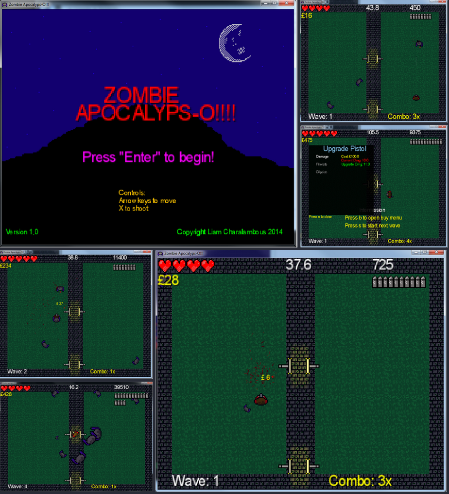

_
****************************************
Liam Charalambous (a.k.a Magellanic) is a Software Developer from Southern England. Currently he is working on his first game Mr.Blocked with
musician, artist and general tech nerd PROTODOME.
Mr.Blocked is a puzzle game being developed using C++ 14 and SFML 2.
Scroll down to check out previous projects and explore the links below for social media.

****************************************
Projects
Topdown Zombie Shooter - Java/Libgdx
Definitely not very pretty but this was one of my earliest attempts at making a game. It was also the first where I made some simple graphics and sound effects. This leveraged Libdgx which is a fantastic framework to work with. The aim with this project was to do something small and simple so it could be completed. Learnt a lot about gameloops, timings, animations and just how difficult gui programming can be.
A remake is currently in development for the TIC-80 fantasy console. The WIP is available to play here.

****************************************
SpaceTrade Ascii Edition - C#
This was a small project I made to learn some basic C#. It uses the console as a canvas rather than a static wall of text. It draws in real time but is very basic. It is an ascii engine I developed to make a 'text' space game like elite. It could be used to make basic platformers, shooters etc. It uses the .Net framework with no additional libraries.

****************************************
Raycasting 3D Engine - SFML.Net
Originally, the dungeon crawler game I was writing was going to use this engine. It is adapted from Lode's cg tutorials. They are fantastic tutorials and found them very insightful into this particular method of rendering 3D. His examples are all in C++ but it wasn't too difficult porting it over to C#. There are a few optimizations I made to get it running at a consistent and smooth framerate.